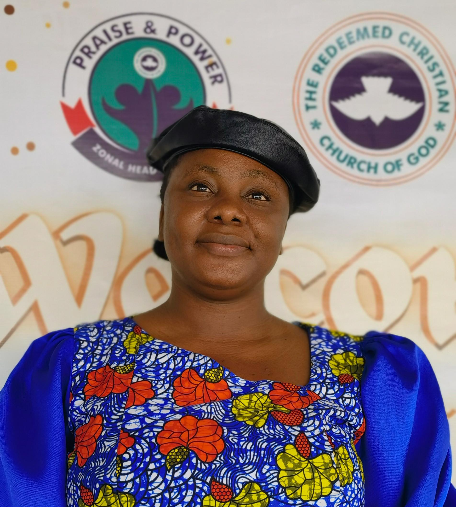

Pastor Olusegun Ogunsanwo
Zonal Pastor
A life shaped by prayer, the Word, and a passion to see every soul reach their full potential in Christ.
Meet the team
Shepherding the flock
Called to lead, love, and serve this house with integrity and excellence.
Zonal Pastor
A life shaped by prayer, the Word, and a passion to see every soul reach their full potential in Christ.
Head of Media
Amplifying the voice of the church through creative and digital service.
Head of Protocol
Serving the house with order, dignity, and a spirit of excellence.

Head of Choir
Helping the church lift its voice in praise and worship.
Serving with excellence
Our ministry teams bring care, welcome, and practical support to church life each week.
Making every guest feel at home and helping services run smoothly.
Helping children build a strong foundation of faith.
Covering the church and community in prayer.
Caring for a safe, welcoming place to gather.
Encouraging men to live with purpose and faith.
Supporting women in their gifts, homes, and calling.
Growing an authentic, faith-filled next generation.
Serving the congregation through music and praise.
Grow with us
We would love to help you connect with a ministry team.